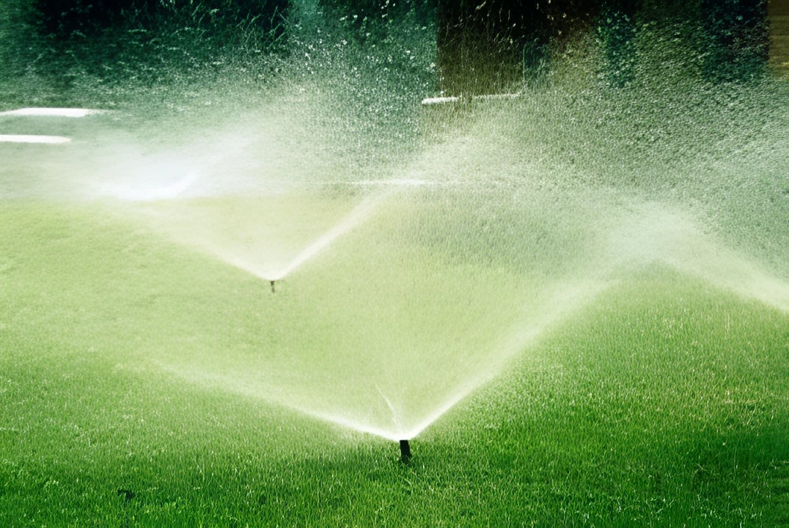

Versatile machines used for plowing, planting, and harvesting crops efficiently.

Unmanned aerial vehicles employed for crop monitoring, irrigation, and pesticide application.

Automated systems such as drip or sprinkler irrigation to optimize water usage.
GPS-based tools and sensors to monitor soil, weather, and crop conditions.

Machines designed to perform multiple harvesting functions like reaping, threshing, and winnowing.